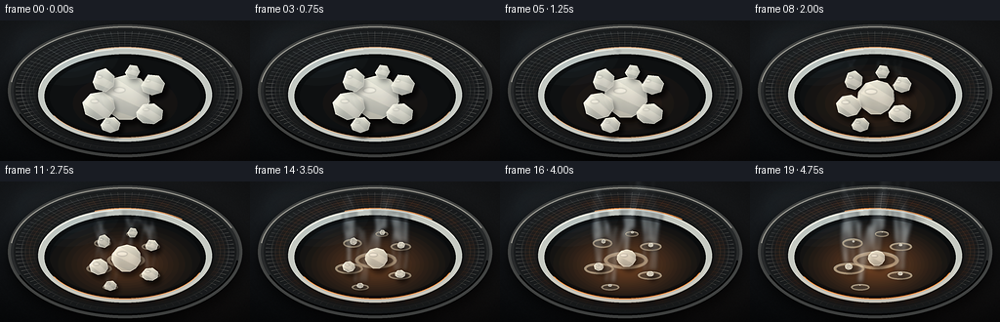
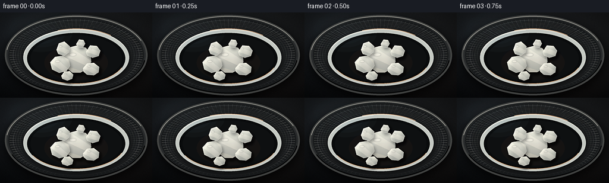
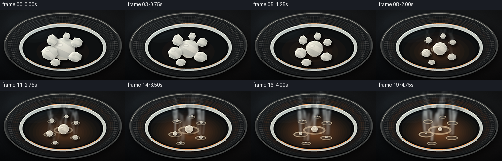
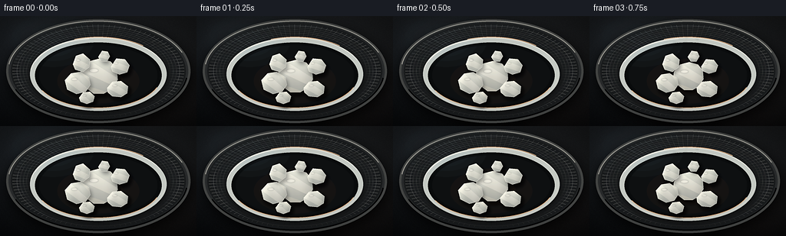
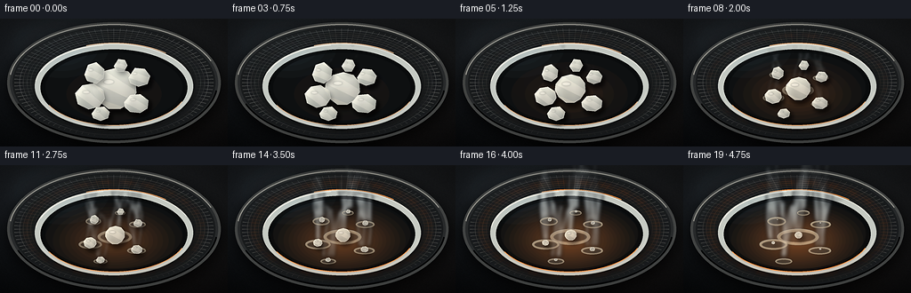
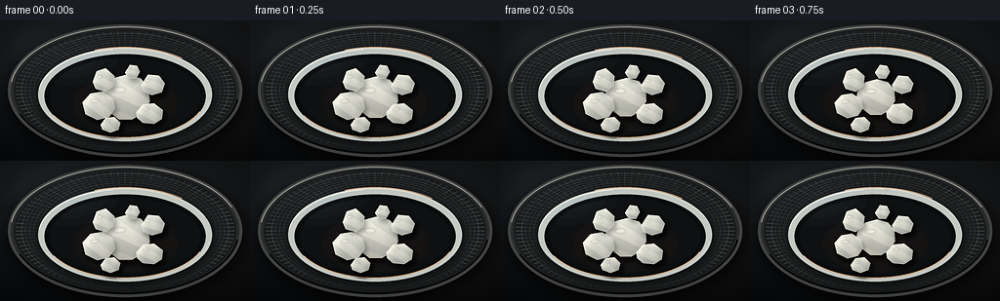

CODING AGENTS AS PIXEL WORLD MODELS
traex/DeepSeek-V4.1-Flash · phygen_119
点击播放 · 原生 RGB 像素
逐轮保存的候选
回放视频、检查图与代码变化。
每份候选均可单独播放。实际图片检查记录在下方工具轨迹中。
候选 01播放与检查图
点击播放 · 原生 RGB 像素


展开代码变化
--- 上一保存版本
+++ 本次保存版本
@@ -0,0 +1,585 @@
+from pathlib import Path
+
+import cv2
+import numpy as np
+from PIL import Image, ImageDraw, ImageFilter
+
+import artifact_io
+
+
+WIDTH = 256
+HEIGHT = 144
+FRAMES = 20
+FPS = 4.0
+SS = 4 # Render at 4x, then downsample for clean edges.
+RNG = np.random.default_rng(119)
+
+
+def sc(value):
+ return value * SS
+
+
+def px(value):
+ return max(1, int(round(sc(value))))
+
+
+def point_xy(point):
+ return (sc(point[0]), sc(point[1]))
+
+
+def ellipse_bbox(cx, cy, rx, ry):
+ return (sc(cx - rx), sc(cy - ry), sc(cx + rx), sc(cy + ry))
+
+
+def smoothstep(value):
+ value = np.clip(value, 0.0, 1.0)
+ return value * value * (3.0 - 2.0 * value)
+
+
+def blend_color(a, b, amount):
+ return tuple(int(round(a[i] * (1.0 - amount) + b[i] * amount)) for i in range(3))
+
+
+def radial_alpha_layer(cx, cy, rx, ry, color, peak_alpha, falloff=1.0):
+ yy, xx = np.mgrid[0 : HEIGHT * SS, 0 : WIDTH * SS]
+ dist = np.sqrt(((xx - sc(cx)) / sc(rx)) ** 2 + ((yy - sc(cy)) / sc(ry)) ** 2)
+ alpha = np.clip(1.0 - dist, 0.0, 1.0) ** falloff * peak_alpha
+ rgba = np.zeros((HEIGHT * SS, WIDTH * SS, 4), dtype=np.uint8)
+ rgba[..., :3] = color
+ rgba[..., 3] = alpha.astype(np.uint8)
+ return Image.fromarray(rgba, "RGBA")
+
+
+def add_noise(image, sigma=1.8):
+ array = np.asarray(image).astype(np.float32)
+ noise = RNG.normal(0.0, sigma, (array.shape[0], array.shape[1], 1))
+ array[..., :3] = np.clip(array[..., :3] + noise, 0, 255)
+ return Image.fromarray(array.astype(np.uint8), "RGBA")
+
+
+def make_background():
+ yy, xx = np.mgrid[0 : HEIGHT * SS, 0 : WIDTH * SS]
+ x = xx / (WIDTH * SS - 1)
+ y = yy / (HEIGHT * SS - 1)
+
+ top = np.array([33, 34, 35], dtype=np.float32)
+ bottom = np.array([12, 14, 16], dtype=np.float32)
+ rgb = top[None, None, :] * (1.0 - y[..., None]) + bottom[None, None, :] * y[..., None]
+
+ cool_pool = np.exp(-(((x - 0.20) / 0.45) ** 2 + ((y - 0.16) / 0.50) ** 2))
+ warm_pool = np.exp(-(((x - 0.74) / 0.38) ** 2 + ((y - 0.82) / 0.42) ** 2))
+ rgb += cool_pool[..., None] * np.array([5.0, 8.0, 11.0])
+ rgb += warm_pool[..., None] * np.array([8.0, 3.5, 1.0])
+
+ # Fine tabletop grain, made directional with a gentle horizontal blur.
+ grain = RNG.normal(0.0, 3.1, (HEIGHT * SS, WIDTH * SS, 1))
+ grain = cv2.GaussianBlur(grain.astype(np.float32), (0, 0), 0.55, sigmaY=0.16)
+ grain = grain[..., None]
+ rgb += grain
+
+ vignette = 1.0 - 0.42 * np.clip(
+ np.sqrt(((x - 0.5) / 0.66) ** 2 + ((y - 0.49) / 0.70) ** 2) - 0.40,
+ 0.0,
+ 1.0,
+ )
+ rgb *= vignette[..., None]
+ rgba = np.empty((HEIGHT * SS, WIDTH * SS, 4), dtype=np.uint8)
+ rgba[..., :3] = np.clip(rgb, 0, 255).astype(np.uint8)
+ rgba[..., 3] = 255
+ image = Image.fromarray(rgba, "RGBA")
+ draw = ImageDraw.Draw(image, "RGBA")
+
+ # A broad, soft reflection on the bench behind the instrument.
+ reflection = Image.new("RGBA", image.size, (0, 0, 0, 0))
+ rd = ImageDraw.Draw(reflection, "RGBA")
+ rd.polygon(
+ [point_xy((14, 5)), point_xy((88, 5)), point_xy((53, 43)), point_xy((2, 48))],
+ fill=(109, 118, 125, 12),
+ )
+ reflection = reflection.filter(ImageFilter.GaussianBlur(sc(7)))
+ image = Image.alpha_composite(image, reflection)
+ draw = ImageDraw.Draw(image, "RGBA")
+
+ # Hotplate drop shadow and brushed metal body.
+ shadow = Image.new("RGBA", image.size, (0, 0, 0, 0))
+ sd = ImageDraw.Draw(shadow, "RGBA")
+ sd.ellipse(ellipse_bbox(129, 78, 122, 69), fill=(0, 0, 0, 185))
+ shadow = shadow.filter(ImageFilter.GaussianBlur(sc(8)))
+ image = Image.alpha_composite(image, shadow)
+ draw = ImageDraw.Draw(image, "RGBA")
+
+ draw.ellipse(ellipse_bbox(128, 72, 120, 68), fill=(74, 75, 73, 255))
+ draw.ellipse(ellipse_bbox(128, 72, 117, 65), fill=(45, 47, 47, 255))
+ draw.ellipse(ellipse_bbox(128, 72, 114, 63), fill=(28, 30, 31, 255))
+ draw.arc(ellipse_bbox(128, 72, 118, 66), 188, 338, fill=(166, 165, 157, 140), width=px(1.3))
+ draw.arc(ellipse_bbox(128, 72, 117, 65), 8, 158, fill=(7, 8, 9, 210), width=px(2.0))
+
+ # Concentric machining marks on the heating plate.
+ for radius in np.arange(22, 110, 4.2):
+ alpha = int(11 + 8 * (radius / 110.0))
+ draw.ellipse(
+ ellipse_bbox(128, 72, radius, radius * 0.555),
+ outline=(150, 151, 148, alpha),
+ width=px(0.20),
+ )
+
+ # Sparse radial brushing.
+ for angle in np.linspace(0, 2 * np.pi, 96, endpoint=False):
+ x0 = 128 + np.cos(angle) * 15
+ y0 = 72 + np.sin(angle) * 8
+ x1 = 128 + np.cos(angle) * 112
+ y1 = 72 + np.sin(angle) * 61
+ alpha = 6 + int(5 * (0.5 + 0.5 * np.sin(angle * 7.0)))
+ draw.line([point_xy((x0, y0)), point_xy((x1, y1))], fill=(188, 187, 180, alpha), width=1)
+
+ # A restrained cool sheen across the top-left of the metal.
+ sheen = Image.new("RGBA", image.size, (0, 0, 0, 0))
+ shd = ImageDraw.Draw(sheen, "RGBA")
+ shd.arc(ellipse_bbox(128, 72, 112, 61), 192, 290, fill=(199, 207, 209, 35), width=sc(3))
+ sheen = sheen.filter(ImageFilter.GaussianBlur(sc(1.8)))
+ image = Image.alpha_composite(image, sheen)
+ return add_noise(image, 0.75)
+
+
+def draw_heating_ring(frame, progress):
+ heat = smoothstep((progress - 0.04) / 0.92)
+ cool = (78, 79, 77)
+ hot = (255, 112, 35)
+ color = blend_color(cool, hot, heat)
+
+ glow = Image.new("RGBA", frame.size, (0, 0, 0, 0))
+ gd = ImageDraw.Draw(glow, "RGBA")
+ for ring_index, (rx, ry, width, alpha_base) in enumerate(
+ ((101.0, 55.0, 2.4, 88), (94.5, 51.8, 1.2, 58))
+ ):
+ for segment in range(24):
+ start = segment * 15 + 3 + ring_index * 4
+ end = start + 10.2
+ alpha = int(alpha_base * (0.55 + 0.45 * heat))
+ gd.arc(
+ ellipse_bbox(128, 72, rx, ry),
+ start,
+ end,
+ fill=(*color, alpha),
+ width=px(width),
+ )
+ glow = glow.filter(ImageFilter.GaussianBlur(sc(1.35 + 1.4 * heat)))
+ frame = Image.alpha_composite(frame, glow)
+
+ bloom = Image.new("RGBA", frame.size, (0, 0, 0, 0))
+ bd = ImageDraw.Draw(bloom, "RGBA")
+ bd.arc(
+ ellipse_bbox(128, 72, 100.0, 54.4),
+ 0,
+ 360,
+ fill=(*color, int(20 + 42 * heat)),
+ width=px(5.0),
+ )
+ bloom = bloom.filter(ImageFilter.GaussianBlur(sc(5.2)))
+ frame = Image.alpha_composite(frame, bloom)
+ return frame, heat
+
+
+def draw_dish(frame, progress, heat):
+ draw = ImageDraw.Draw(frame, "RGBA")
+
+ dish_shadow = Image.new("RGBA", frame.size, (0, 0, 0, 0))
+ ds = ImageDraw.Draw(dish_shadow, "RGBA")
+ ds.ellipse(ellipse_bbox(129.0, 79.0, 89.0, 48.5), fill=(0, 0, 0, 118))
+ dish_shadow = dish_shadow.filter(ImageFilter.GaussianBlur(sc(4.2)))
+ frame = Image.alpha_composite(frame, dish_shadow)
+ draw = ImageDraw.Draw(frame, "RGBA")
+
+ # Clear borosilicate dish: pale glass edge, dark low-alpha basin.
+ draw.ellipse(ellipse_bbox(128, 76, 89, 48), fill=(205, 211, 207, 32))
+ draw.ellipse(ellipse_bbox(128, 76, 85.8, 45.8), fill=(205, 211, 207, 21))
+ draw.ellipse(ellipse_bbox(128, 77.5, 82.5, 43.0), fill=(10, 12, 13, 88))
+ draw.ellipse(ellipse_bbox(128, 77.5, 77.0, 39.2), fill=(15, 17, 18, 34))
+
+ # Dark inner lip helps the white crystals read at 256x144.
+ draw.arc(ellipse_bbox(128, 77.5, 82.5, 43.0), 15, 195, fill=(4, 5, 6, 175), width=px(2.1))
+ draw.arc(ellipse_bbox(128, 76, 88.8, 47.8), 187, 337, fill=(236, 238, 232, 100), width=px(1.25))
+ draw.arc(ellipse_bbox(128, 76, 87.7, 46.8), 8, 158, fill=(222, 225, 220, 58), width=px(0.9))
+
+ # The glass picks up the increasing coil temperature from below.
+ warm_color = blend_color((200, 205, 199), (255, 154, 74), 0.45 + 0.55 * heat)
+ warm_alpha = int(30 + 80 * heat)
+ draw.arc(
+ ellipse_bbox(128, 77.5, 82.8, 43.2),
+ 22,
+ 152,
+ fill=(*warm_color, warm_alpha),
+ width=px(0.9),
+ )
+
+ # Small top-left glint and a faint underside reflection.
+ draw.arc(
+ ellipse_bbox(128, 76, 88.0, 47.0),
+ 200,
+ 262,
+ fill=(255, 255, 248, 185),
+ width=px(0.8),
+ )
+ draw.arc(
+ ellipse_bbox(128, 76, 91.0, 49.0),
+ 250,
+ 310,
+ fill=(*warm_color, int(18 + 40 * heat)),
+ width=px(1.1),
+ )
+ return frame
+
+
+CHUNKS = [
+ {
+ "center": (129.0, 79.5),
+ "points": [
+ (-24, -8), (-14, -20), (1, -24), (15, -20), (23, -10),
+ (24, 4), (16, 16), (6, 22), (-7, 22), (-19, 13), (-25, 2),
+ ],
+ "delay": 0.02,
+ "final_scale": 0.34,
+ "round": 1.00,
+ "tilt": 0.20,
+ },
+ {
+ "center": (101.5, 88.0),
+ "points": [(-17, -4), (-9, -13), (3, -15), (14, -8), (16, 2), (10, 11), (-2, 14), (-14, 8)],
+ "delay": 0.10,
+ "final_scale": 0.22,
+ "round": 0.95,
+ "tilt": -0.18,
+ },
+ {
+ "center": (105.0, 62.0),
+ "points": [(-10, 1), (-6, -10), (3, -13), (12, -5), (11, 5), (3, 11), (-7, 8)],
+ "delay": 0.18,
+ "final_scale": 0.08,
+ "round": 1.00,
+ "tilt": 0.30,
+ },
+ {
+ "center": (154.5, 65.5),
+ "points": [(-10, 1), (-3, -10), (8, -9), (14, -1), (11, 8), (1, 11), (-8, 7)],
+ "delay": 0.12,
+ "final_scale": 0.12,
+ "round": 0.92,
+ "tilt": -0.25,
+ },
+ {
+ "center": (153.5, 95.0),
+ "points": [(-14, -1), (-7, -9), (4, -10), (13, -3), (12, 6), (4, 11), (-7, 10), (-13, 5)],
+ "delay": 0.20,
+ "final_scale": 0.16,
+ "round": 1.00,
+ "tilt": 0.16,
+ },
+ {
+ "center": (113.0, 107.0),
+ "points": [(-10, 0), (-5, -7), (4, -8), (10, -2), (8, 5), (0, 8), (-8, 5)],
+ "delay": 0.27,
+ "final_scale": 0.04,
+ "round": 0.90,
+ "tilt": -0.20,
+ },
+ {
+ "center": (135.0, 52.5),
+ "points": [(-7, 1), (-2, -7), (5, -6), (8, 0), (4, 7), (-3, 7)],
+ "delay": 0.31,
+ "final_scale": 0.03,
+ "round": 1.00,
+ "tilt": 0.12,
+ },
+]
+
+
+def crystal_geometry(chunk, progress):
+ q = float(np.clip((progress - chunk["delay"]) / (1.0 - chunk["delay"]), 0.0, 1.0))
+ eased = float(smoothstep(q))
+ scale = 1.0 - (1.0 - chunk["final_scale"]) * eased
+ base_points = np.asarray(chunk["points"], dtype=np.float32)
+
+ # Dense sampling lets us round the silhouette without losing the original facets.
+ dense = []
+ for index in range(len(base_points)):
+ a = base_points[index]
+ b = base_points[(index + 1) % len(base_points)]
+ edge = float(np.linalg.norm(b - a))
+ samples = max(3, int(edge / 0.28))
+ for t in np.linspace(0.0, 1.0, samples, endpoint=False):
+ dense.append(a * (1.0 - t) + b * t)
+ dense = np.asarray(dense, dtype=np.float32)
+
+ roundness = chunk["round"] * float(smoothstep((q - 0.04) / 0.82))
+ sigma = 0.35 + 2.15 * roundness
+ if sigma > 0.42:
+ kernel_radius = max(1, int(np.ceil(sigma * 3.0)))
+ kernel_x = np.arange(-kernel_radius, kernel_radius + 1, dtype=np.float32)
+ kernel = np.exp(-0.5 * (kernel_x / sigma) ** 2)
+ kernel /= kernel.sum()
+ padded = np.pad(dense, ((kernel_radius, kernel_radius), (0, 0)), mode="wrap")
+ smoothed = np.empty_like(dense)
+ smoothed[:, 0] = np.convolve(padded[:, 0], kernel, mode="valid")
+ smoothed[:, 1] = np.convolve(padded[:, 1], kernel, mode="valid")
+ dense = smoothed
+
+ center = np.asarray(chunk["center"], dtype=np.float32)
+ drift = np.array([chunk["tilt"] * 2.4 * eased, -0.7 * eased], dtype=np.float32)
+ points = center + drift + dense * scale
+ opacity = 1.0 - 0.18 * eased
+ if chunk["final_scale"] < 0.10:
+ opacity *= float(np.clip(1.0 - 0.88 * q, 0.0, 1.0))
+ return points, scale, q, eased, float(np.clip(opacity, 0.0, 1.0))
+
+
+def draw_melt_pool(frame, chunk, progress, heat):
+ if progress < 0.38:
+ return frame
+ melt = float(smoothstep((progress - 0.34) / 0.66))
+ if melt <= 0.01:
+ return frame
+ points = np.asarray(chunk["points"], dtype=np.float32)
+ width = float(points[:, 0].max() - points[:, 0].min())
+ height = float(points[:, 1].max() - points[:, 1].min())
+ cx, cy = chunk["center"]
+ rx = width * (0.36 + 0.12 * melt)
+ ry = max(2.4, height * (0.15 + 0.05 * melt))
+
+ layer = Image.new("RGBA", frame.size, (0, 0, 0, 0))
+ draw = ImageDraw.Draw(layer, "RGBA")
+ tint = blend_color((212, 207, 188), (246, 220, 177), heat * 0.52)
+ draw.ellipse(ellipse_bbox(cx, cy + 1.5, rx, ry), fill=(*tint, int(28 + 34 * melt)))
+ draw.ellipse(
+ ellipse_bbox(cx, cy + 1.5, rx * 0.82, ry * 0.62),
+ fill=(84, 81, 73, int(18 + 16 * melt)),
+ )
+ draw.arc(
+ ellipse_bbox(cx, cy + 1.2, rx, ry),
+ 182,
+ 344,
+ fill=(255, 250, 231, int(48 + 58 * melt)),
+ width=px(0.45),
+ )
+ layer = layer.filter(ImageFilter.GaussianBlur(sc(0.30)))
+ return Image.alpha_composite(frame, layer)
+
+
+def render_crystal(frame, chunk, progress, heat):
+ points, scale, q, eased, opacity = crystal_geometry(chunk, progress)
+ if opacity <= 0.012:
+ return frame
+ pts_hi = np.rint(points * SS).astype(np.int32)
+ cx, cy = chunk["center"]
+ cx += chunk["tilt"] * 2.4 * eased
+ cy -= 0.7 * eased
+
+ # Soft contact shadow.
+ shadow = Image.new("RGBA", frame.size, (0, 0, 0, 0))
+ sd = ImageDraw.Draw(shadow, "RGBA")
+ shadow_pts = [(int(x + sc(2.7)), int(y + sc(3.5))) for x, y in pts_hi]
+ sd.polygon(shadow_pts, fill=(0, 0, 0, int(92 * opacity)))
+ shadow = shadow.filter(ImageFilter.GaussianBlur(sc(2.4)))
+ frame = Image.alpha_composite(frame, shadow)
+
+ x0 = max(0, int(pts_hi[:, 0].min()) - sc(2))
+ y0 = max(0, int(pts_hi[:, 1].min()) - sc(2))
+ x1 = min(frame.width, int(pts_hi[:, 0].max()) + sc(2) + 1)
+ y1 = min(frame.height, int(pts_hi[:, 1].max()) + sc(2) + 1)
+ if x1 <= x0 or y1 <= y0:
+ return frame
+
+ mask_img = Image.new("L", frame.size, 0)
+ md = ImageDraw.Draw(mask_img)
+ md.polygon([tuple(p) for p in pts_hi], fill=255)
+ mask = np.asarray(mask_img.crop((x0, y0, x1, y1))).astype(np.float32) / 255.0
+
+ local_y, local_x = np.mgrid[y0:y1, x0:x1]
+ nx = (local_x / SS - cx) / max(3.0, (points[:, 0].max() - points[:, 0].min()) * 0.55)
+ ny = (local_y / SS - cy) / max(3.0, (points[:, 1].max() - points[:, 1].min()) * 0.55)
+ light = np.clip(0.94 - 0.14 * nx - 0.19 * ny + 0.035 * np.sin(nx * 5.2), 0.52, 1.10)
+
+ base_cool = np.array([225, 228, 221], dtype=np.float32)
+ base_warm = np.array([242, 234, 211], dtype=np.float32)
+ warm_mix = 0.14 + 0.46 * heat + 0.10 * q
+ base = base_cool[None, None, :] * (1.0 - warm_mix) + base_warm[None, None, :] * warm_mix
+ rgb = np.clip(base * light[..., None], 0, 255)
+ alpha = np.clip((205 + 31 * np.clip(light - 0.52, 0, 1)) * opacity, 0, 255) * mask
+
+ crystal_rgba = np.zeros((y1 - y0, x1 - x0, 4), dtype=np.uint8)
+ crystal_rgba[..., :3] = rgb.astype(np.uint8)
+ crystal_rgba[..., 3] = alpha.astype(np.uint8)
+ crystal = Image.fromarray(crystal_rgba, "RGBA")
+
+ # Large facet wedges give the waxy solid a faceted, crystalline surface.
+ facets = Image.new("RGBA", crystal.size, (0, 0, 0, 0))
+ fd = ImageDraw.Draw(facets, "RGBA")
+ ridge = (sc(cx - 3.2), sc(cy - 4.4))
+ sample_count = 8
+ boundary = pts_hi - np.array([x0, y0])
+ indices = np.linspace(0, len(boundary) - 1, sample_count, endpoint=False).astype(int)
+ facet_colors = [
+ (250, 251, 244, 74), (198, 204, 198, 72), (242, 239, 222, 58),
+ (176, 184, 181, 72), (235, 238, 228, 68), (203, 207, 197, 54),
+ (248, 244, 226, 62), (187, 194, 190, 66),
+ ]
+ for index, boundary_index in enumerate(indices):
+ next_index = indices[(index + 1) % sample_count]
+ triangle = [ridge, tuple(boundary[boundary_index]), tuple(boundary[next_index])]
+ fd.polygon(triangle, fill=facet_colors[index % len(facet_colors)])
+
+ # Faint internal cleavage lines.
+ for index in indices[::2]:
+ fd.line(
+ [ridge, tuple(boundary[index])],
+ fill=(245, 245, 233, int(42 * (1.0 - 0.55 * q))),
+ width=px(0.30),
+ )
+ crystal = Image.alpha_composite(crystal, facets)
+
+ # Specular glint strengthens as the solid softens.
+ glint = Image.new("RGBA", crystal.size, (0, 0, 0, 0))
+ gd = ImageDraw.Draw(glint, "RGBA")
+ width = points[:, 0].max() - points[:, 0].min()
+ height = points[:, 1].max() - points[:, 1].min()
+ gx = sc(cx - width * 0.14) - x0
+ gy = sc(cy - height * 0.18) - y0
+ grx = max(sc(1.2), sc(width * (0.12 + 0.10 * q)))
+ gry = max(sc(0.55), sc(height * (0.055 + 0.04 * q)))
+ gd.ellipse(
+ (gx - grx, gy - gry, gx + grx, gy + gry),
+ fill=(255, 255, 248, int(85 + 70 * q)),
+ )
+ glint = glint.filter(ImageFilter.GaussianBlur(sc(0.55)))
+ crystal = Image.alpha_composite(crystal, glint)
+
+ alpha_channel = crystal.getchannel("A")
+ clipped_alpha = Image.fromarray((np.asarray(alpha_channel).astype(np.float32) * mask).astype(np.uint8))
+ crystal.putalpha(clipped_alpha)
+
+ frame.alpha_composite(crystal, dest=(x0, y0))
+
+ # A delicate top-left rim catches the key light.
+ rim = Image.new("RGBA", frame.size, (0, 0, 0, 0))
+ rd = ImageDraw.Draw(rim, "RGBA")
+ rim_pts = [tuple(p) for p in pts_hi]
+ rd.line(
+ rim_pts,
+ fill=(255, 255, 248, int(92 + 38 * q)),
+ width=px(0.38),
+ joint="curve",
+ )
+ frame = Image.alpha_composite(frame, rim)
+ return frame
+
+
+def draw_vapor(frame, progress, heat, frame_index):
+ vapor_strength = float(smoothstep((progress - 0.16) / 0.84))
+ if vapor_strength <= 0.01:
+ return frame
+
+ vapor = Image.new("RGBA", frame.size, (0, 0, 0, 0))
+ draw = ImageDraw.Draw(vapor, "RGBA")
+ for chunk_index, chunk in enumerate(CHUNKS):
+ q = float(np.clip((progress - chunk["delay"]) / (1.0 - chunk["delay"]), 0.0, 1.0))
+ source_strength = float(smoothstep((q - 0.05) / 0.72))
+ if source_strength <= 0.01:
+ continue
+ cx, cy = chunk["center"]
+ for wisp_index in range(3):
+ phase = frame_index * 0.47 + chunk_index * 0.91 + wisp_index * 1.63
+ height = 18.0 + 43.0 * vapor_strength + 8.0 * np.sin(phase * 0.31 + chunk_index)
+ drift = 7.0 * np.sin(phase * 0.27 + chunk_index * 0.8) + (wisp_index - 1) * 2.0
+ base_x = cx + (wisp_index - 1) * 3.4 + 1.3 * np.sin(phase)
+ base_y = cy - 4.0
+ path = []
+ for step in range(19):
+ t = step / 18.0
+ x = (
+ base_x
+ + drift * t
+ + np.sin(phase + t * 4.7) * (0.65 + 2.1 * t)
+ + np.sin(phase * 0.63 + t * 8.1) * 0.85 * t
+ )
+ y = base_y - height * t + 1.0 * np.sin(phase * 0.71 + t * 5.0) * t
+ path.append(point_xy((x, y)))
+ alpha = int((13 + 25 * vapor_strength) * source_strength)
+ width = px(1.0 + 2.2 * vapor_strength)
+ draw.line(path, fill=(206, 219, 224, alpha), width=width, joint="curve")
+ draw.line(
+ [point_xy((base_x, base_y - 1.0)), point_xy((base_x + drift * 0.45, base_y - height * 0.45))],
+ fill=(235, 237, 229, int(alpha * 0.65)),
+ width=px(0.55),
+ )
+
+ # A few slow mist particles break up the continuous ribbons.
+ for particle_index in range(24):
+ phase = particle_index * 2.17 + frame_index * 0.36
+ particle_x = 128 + np.sin(phase * 1.33) * (18 + 33 * vapor_strength)
+ py = 73 - ((frame_index * 2.5 + particle_index * 6.3) % 58) - 8 * vapor_strength
+ radius = 0.45 + (particle_index % 4) * 0.23
+ alpha = int((12 + 21 * vapor_strength) * (0.35 + 0.65 * np.sin(phase) ** 2))
+ draw.ellipse(
+ ellipse_bbox(particle_x, py, radius, radius * 0.75),
+ fill=(221, 229, 228, alpha),
+ )
+
+ vapor = vapor.filter(ImageFilter.GaussianBlur(sc(1.35 + 0.8 * vapor_strength)))
+ return Image.alpha_composite(frame, vapor)
+
+
+def apply_lighting(frame, progress, heat):
+ warm = radial_alpha_layer(128, 85, 96, 53, (255, 135, 57), int(4 + 21 * heat), falloff=1.7)
+ frame = Image.alpha_composite(frame, warm)
+
+ cool = radial_alpha_layer(69, 31, 78, 52, (137, 175, 194), 8, falloff=1.8)
+ frame = Image.alpha_composite(frame, cool)
+
+ array = np.asarray(frame).astype(np.float32)
+ yy = np.linspace(-1.0, 1.0, array.shape[0], dtype=np.float32)[:, None]
+ xx = np.linspace(-1.0, 1.0, array.shape[1], dtype=np.float32)[None, :]
+ vignette = np.clip(1.0 - 0.20 * (xx * xx * 0.55 + yy * yy), 0.72, 1.0)
+ array[..., :3] *= vignette[..., None]
+
+ # Slight warm/cool split toning, strongest as the hotplate reaches temperature.
+ shadows = np.array([0.97, 1.00, 1.035], dtype=np.float32)
+ highlights = np.array([1.035, 1.012, 0.972], dtype=np.float32)
+ luma = array[..., :3].mean(axis=2, keepdims=True) / 255.0
+ tone = shadows * (1.0 - luma) + highlights * luma
+ tone = 1.0 + (tone - 1.0) * (0.55 + 0.30 * heat)
+ array[..., :3] = np.clip(array[..., :3] * tone, 0, 255)
+ return Image.fromarray(array.astype(np.uint8), "RGBA")
+
+
+def render_frame(base, frame_index):
+ progress = frame_index / (FRAMES - 1)
+ frame = base.copy()
+ frame, heat = draw_heating_ring(frame, progress)
+ frame = draw_dish(frame, progress, heat)
+
+ # Melt pools sit below the remaining solid.
+ for chunk in CHUNKS:
+ frame = draw_melt_pool(frame, chunk, progress, heat)
+
+ for chunk in CHUNKS:
+ frame = render_crystal(frame, chunk, progress, heat)
+
+ frame = draw_vapor(frame, progress, heat, frame_index)
+ frame = apply_lighting(frame, progress, heat)
+
+ rgb = frame.convert("RGB").resize((WIDTH, HEIGHT), Image.Resampling.LANCZOS)
+ rgb = rgb.filter(ImageFilter.UnsharpMask(radius=0.62, percent=58, threshold=2))
+ return np.asarray(rgb, dtype=np.uint8)
+
+
+def main():
+ case_dir = Path(__file__).resolve().parent
+ base = make_background()
+ frames = np.stack([render_frame(base, index) for index in range(FRAMES)], axis=0)
+ assert frames.shape == (FRAMES, HEIGHT, WIDTH, 3), frames.shape
+ assert frames.dtype == np.uint8
+ artifact_io.save(frames, case_dir)
+ print(f"Saved {len(frames)} frames to {case_dir}")
+
+
+if __name__ == "__main__":
+ main()
候选 02播放与检查图
点击播放 · 原生 RGB 像素


展开代码变化
--- 上一保存版本
+++ 本次保存版本
@@ -47,14 +47,14 @@
rgba = np.zeros((HEIGHT * SS, WIDTH * SS, 4), dtype=np.uint8)
rgba[..., :3] = color
rgba[..., 3] = alpha.astype(np.uint8)
- return Image.fromarray(rgba, "RGBA")
+ return Image.fromarray(rgba)
def add_noise(image, sigma=1.8):
array = np.asarray(image).astype(np.float32)
noise = RNG.normal(0.0, sigma, (array.shape[0], array.shape[1], 1))
array[..., :3] = np.clip(array[..., :3] + noise, 0, 255)
- return Image.fromarray(array.astype(np.uint8), "RGBA")
+ return Image.fromarray(array.astype(np.uint8))
def make_background():
@@ -86,7 +86,7 @@
rgba = np.empty((HEIGHT * SS, WIDTH * SS, 4), dtype=np.uint8)
rgba[..., :3] = np.clip(rgb, 0, 255).astype(np.uint8)
rgba[..., 3] = 255
- image = Image.fromarray(rgba, "RGBA")
+ image = Image.fromarray(rgba)
draw = ImageDraw.Draw(image, "RGBA")
# A broad, soft reflection on the bench behind the instrument.
@@ -238,7 +238,7 @@
(24, 4), (16, 16), (6, 22), (-7, 22), (-19, 13), (-25, 2),
],
"delay": 0.02,
- "final_scale": 0.34,
+ "final_scale": 0.16,
"round": 1.00,
"tilt": 0.20,
},
@@ -246,7 +246,7 @@
"center": (101.5, 88.0),
"points": [(-17, -4), (-9, -13), (3, -15), (14, -8), (16, 2), (10, 11), (-2, 14), (-14, 8)],
"delay": 0.10,
- "final_scale": 0.22,
+ "final_scale": 0.10,
"round": 0.95,
"tilt": -0.18,
},
@@ -254,7 +254,7 @@
"center": (105.0, 62.0),
"points": [(-10, 1), (-6, -10), (3, -13), (12, -5), (11, 5), (3, 11), (-7, 8)],
"delay": 0.18,
- "final_scale": 0.08,
+ "final_scale": 0.02,
"round": 1.00,
"tilt": 0.30,
},
@@ -262,7 +262,7 @@
"center": (154.5, 65.5),
"points": [(-10, 1), (-3, -10), (8, -9), (14, -1), (11, 8), (1, 11), (-8, 7)],
"delay": 0.12,
- "final_scale": 0.12,
+ "final_scale": 0.04,
"round": 0.92,
"tilt": -0.25,
},
@@ -270,7 +270,7 @@
"center": (153.5, 95.0),
"points": [(-14, -1), (-7, -9), (4, -10), (13, -3), (12, 6), (4, 11), (-7, 10), (-13, 5)],
"delay": 0.20,
- "final_scale": 0.16,
+ "final_scale": 0.06,
"round": 1.00,
"tilt": 0.16,
},
@@ -278,7 +278,7 @@
"center": (113.0, 107.0),
"points": [(-10, 0), (-5, -7), (4, -8), (10, -2), (8, 5), (0, 8), (-8, 5)],
"delay": 0.27,
- "final_scale": 0.04,
+ "final_scale": 0.00,
"round": 0.90,
"tilt": -0.20,
},
@@ -286,7 +286,7 @@
"center": (135.0, 52.5),
"points": [(-7, 1), (-2, -7), (5, -6), (8, 0), (4, 7), (-3, 7)],
"delay": 0.31,
- "final_scale": 0.03,
+ "final_scale": 0.00,
"round": 1.00,
"tilt": 0.12,
},
@@ -295,7 +295,7 @@
def crystal_geometry(chunk, progress):
q = float(np.clip((progress - chunk["delay"]) / (1.0 - chunk["delay"]), 0.0, 1.0))
- eased = float(smoothstep(q))
+ eased = float(q**0.72)
scale = 1.0 - (1.0 - chunk["final_scale"]) * eased
base_points = np.asarray(chunk["points"], dtype=np.float32)
@@ -408,7 +408,7 @@
crystal_rgba = np.zeros((y1 - y0, x1 - x0, 4), dtype=np.uint8)
crystal_rgba[..., :3] = rgb.astype(np.uint8)
crystal_rgba[..., 3] = alpha.astype(np.uint8)
- crystal = Image.fromarray(crystal_rgba, "RGBA")
+ crystal = Image.fromarray(crystal_rgba)
# Large facet wedges give the waxy solid a faceted, crystalline surface.
facets = Image.new("RGBA", crystal.size, (0, 0, 0, 0))
@@ -473,7 +473,7 @@
def draw_vapor(frame, progress, heat, frame_index):
- vapor_strength = float(smoothstep((progress - 0.16) / 0.84))
+ vapor_strength = float(smoothstep((progress - 0.10) / 0.90))
if vapor_strength <= 0.01:
return frame
@@ -502,12 +502,12 @@
)
y = base_y - height * t + 1.0 * np.sin(phase * 0.71 + t * 5.0) * t
path.append(point_xy((x, y)))
- alpha = int((13 + 25 * vapor_strength) * source_strength)
+ alpha = int((20 + 34 * vapor_strength) * source_strength)
width = px(1.0 + 2.2 * vapor_strength)
- draw.line(path, fill=(206, 219, 224, alpha), width=width, joint="curve")
+ draw.line(path, fill=(218, 227, 228, alpha), width=width, joint="curve")
draw.line(
[point_xy((base_x, base_y - 1.0)), point_xy((base_x + drift * 0.45, base_y - height * 0.45))],
- fill=(235, 237, 229, int(alpha * 0.65)),
+ fill=(240, 240, 232, int(alpha * 0.68)),
width=px(0.55),
)
@@ -517,10 +517,10 @@
particle_x = 128 + np.sin(phase * 1.33) * (18 + 33 * vapor_strength)
py = 73 - ((frame_index * 2.5 + particle_index * 6.3) % 58) - 8 * vapor_strength
radius = 0.45 + (particle_index % 4) * 0.23
- alpha = int((12 + 21 * vapor_strength) * (0.35 + 0.65 * np.sin(phase) ** 2))
+ alpha = int((17 + 28 * vapor_strength) * (0.35 + 0.65 * np.sin(phase) ** 2))
draw.ellipse(
ellipse_bbox(particle_x, py, radius, radius * 0.75),
- fill=(221, 229, 228, alpha),
+ fill=(229, 234, 232, alpha),
)
vapor = vapor.filter(ImageFilter.GaussianBlur(sc(1.35 + 0.8 * vapor_strength)))
@@ -547,7 +547,31 @@
tone = shadows * (1.0 - luma) + highlights * luma
tone = 1.0 + (tone - 1.0) * (0.55 + 0.30 * heat)
array[..., :3] = np.clip(array[..., :3] * tone, 0, 255)
- return Image.fromarray(array.astype(np.uint8), "RGBA")
+ return Image.fromarray(array.astype(np.uint8))
+
+
+def apply_heat_shimmer(frame, frame_index, heat):
+ if heat <= 0.04:
+ return frame
+ array = np.asarray(frame)
+ height, width = array.shape[:2]
+ yy, xx = np.mgrid[0:height, 0:width].astype(np.float32)
+ amplitude = 0.58 * heat
+ wave_x = np.sin(yy / 7.2 + frame_index * 0.78 + xx / 61.0)
+ wave_y = np.sin(xx / 10.8 - frame_index * 0.61)
+ horizontal = amplitude * wave_x * np.exp(-((yy - 48.0) / 39.0) ** 2)
+ vertical = amplitude * 0.24 * wave_y * np.exp(-((yy - 55.0) / 36.0) ** 2)
+ warped = cv2.remap(
+ array,
+ np.ascontiguousarray(xx + horizontal, dtype=np.float32),
+ np.ascontiguousarray(yy + vertical, dtype=np.float32),
+ interpolation=cv2.INTER_LINEAR,
+ borderMode=cv2.BORDER_REFLECT,
+ )
+ feather = np.exp(-((yy - 50.0) / 43.0) ** 2) * np.clip((84.0 - yy) / 16.0, 0.0, 1.0)
+ mask = (0.26 * heat * feather)[..., None]
+ mixed = array.astype(np.float32) * (1.0 - mask) + warped.astype(np.float32) * mask
+ return Image.fromarray(np.clip(mixed, 0, 255).astype(np.uint8))
def render_frame(base, frame_index):
@@ -563,6 +587,7 @@
for chunk in CHUNKS:
frame = render_crystal(frame, chunk, progress, heat)
+ frame = apply_heat_shimmer(frame, frame_index, heat)
frame = draw_vapor(frame, progress, heat, frame_index)
frame = apply_lighting(frame, progress, heat)
@@ -578,6 +603,18 @@
assert frames.shape == (FRAMES, HEIGHT, WIDTH, 3), frames.shape
assert frames.dtype == np.uint8
artifact_io.save(frames, case_dir)
+ writer = cv2.VideoWriter(
+ str(case_dir / "video.mp4"),
+ cv2.VideoWriter_fourcc(*"mp4v"),
+ FPS,
+ (WIDTH, HEIGHT),
+ )
+ if writer.isOpened():
+ for frame in frames:
+ writer.write(cv2.cvtColor(frame, cv2.COLOR_RGB2BGR))
+ writer.release()
+ else:
+ print("Warning: OpenCV MP4 writer unavailable")
print(f"Saved {len(frames)} frames to {case_dir}")
候选 03播放与检查图
点击播放 · 原生 RGB 像素


展开代码变化
--- 上一保存版本
+++ 本次保存版本
@@ -1,6 +1,5 @@
from pathlib import Path
-import cv2
import numpy as np
from PIL import Image, ImageDraw, ImageFilter
@@ -72,9 +71,10 @@
rgb += warm_pool[..., None] * np.array([8.0, 3.5, 1.0])
# Fine tabletop grain, made directional with a gentle horizontal blur.
- grain = RNG.normal(0.0, 3.1, (HEIGHT * SS, WIDTH * SS, 1))
- grain = cv2.GaussianBlur(grain.astype(np.float32), (0, 0), 0.55, sigmaY=0.16)
- grain = grain[..., None]
+ grain = RNG.normal(0.0, 3.1, (HEIGHT * SS, WIDTH * SS))
+ grain_img = Image.fromarray(np.clip(grain + 128.0, 0, 255).astype(np.uint8))
+ grain_img = grain_img.filter(ImageFilter.GaussianBlur(0.34))
+ grain = (np.asarray(grain_img).astype(np.float32) - 128.0)[..., None]
rgb += grain
vignette = 1.0 - 0.42 * np.clip(
@@ -561,16 +561,20 @@
wave_y = np.sin(xx / 10.8 - frame_index * 0.61)
horizontal = amplitude * wave_x * np.exp(-((yy - 48.0) / 39.0) ** 2)
vertical = amplitude * 0.24 * wave_y * np.exp(-((yy - 55.0) / 36.0) ** 2)
- warped = cv2.remap(
- array,
- np.ascontiguousarray(xx + horizontal, dtype=np.float32),
- np.ascontiguousarray(yy + vertical, dtype=np.float32),
- interpolation=cv2.INTER_LINEAR,
- borderMode=cv2.BORDER_REFLECT,
- )
+ map_x = np.clip(xx + horizontal, 0, width - 1.001)
+ map_y = np.clip(yy + vertical, 0, height - 1.001)
+ x0 = np.floor(map_x).astype(np.int32)
+ y0 = np.floor(map_y).astype(np.int32)
+ x1 = np.minimum(x0 + 1, width - 1)
+ y1 = np.minimum(y0 + 1, height - 1)
+ wx = (map_x - x0)[..., None]
+ wy = (map_y - y0)[..., None]
+ top = array[y0, x0].astype(np.float32) * (1.0 - wx) + array[y0, x1].astype(np.float32) * wx
+ bottom = array[y1, x0].astype(np.float32) * (1.0 - wx) + array[y1, x1].astype(np.float32) * wx
+ warped = top * (1.0 - wy) + bottom * wy
feather = np.exp(-((yy - 50.0) / 43.0) ** 2) * np.clip((84.0 - yy) / 16.0, 0.0, 1.0)
mask = (0.26 * heat * feather)[..., None]
- mixed = array.astype(np.float32) * (1.0 - mask) + warped.astype(np.float32) * mask
+ mixed = array.astype(np.float32) * (1.0 - mask) + warped * mask
return Image.fromarray(np.clip(mixed, 0, 255).astype(np.uint8))
@@ -603,18 +607,15 @@
assert frames.shape == (FRAMES, HEIGHT, WIDTH, 3), frames.shape
assert frames.dtype == np.uint8
artifact_io.save(frames, case_dir)
- writer = cv2.VideoWriter(
- str(case_dir / "video.mp4"),
- cv2.VideoWriter_fourcc(*"mp4v"),
- FPS,
- (WIDTH, HEIGHT),
- )
- if writer.isOpened():
- for frame in frames:
- writer.write(cv2.cvtColor(frame, cv2.COLOR_RGB2BGR))
- writer.release()
- else:
- print("Warning: OpenCV MP4 writer unavailable")
+ animation = [Image.fromarray(frame) for frame in frames]
+ animation[0].save(
+ case_dir / "video.webp",
+ save_all=True,
+ append_images=animation[1:],
+ duration=round(1000.0 / FPS),
+ loop=0,
+ lossless=True,
+ )
print(f"Saved {len(frames)} frames to {case_dir}")
可观测工具轨迹
实际执行的命令与返回图片。
命令 1exit 0
/bin/bash -lc "pwd && rg --files -g '"'!**/.git/**'"' | sort"
命令 2exit 0
/bin/bash -lc "printf '%s\\n' '--- prompt.txt ---'; sed -n '1,240p' prompt.txt; printf '%s\\n' '--- GENERATION_RULES.md ---'; sed -n '1,300p' GENERATION_RULES.md; printf '%s\\n' '--- task_spec.json ---'; sed -n '1,300p' task_spec.json"
命令 3exit 0
/bin/bash -lc "find . -maxdepth 2 -type f -printf '%p %s bytes\\n' | sort; printf '\\n--- toolchain ---\\n'; command -v ffmpeg || true; command -v ffprobe || true; command -v python3 || true; python3 - <<'PY'
try:
import cv2; print('cv2', cv2.__version__)
except Exception as e: print('cv2 unavailable', e)
try:
import numpy; print('numpy', numpy.__version__)
except Exception as e: print('numpy unavailable', e)
try:
import PIL; print('PIL', PIL.__version__)
except Exception as e: print('PIL unavailable', e)
PY"命令 4exit 0
/bin/bash -lc "sed -n '1,260p' artifact_io.py; printf '\\n--- player ---\\n'; sed -n '1,220p' player_template.html"
命令 5exit 0
/bin/bash -lc 'command -v chafa || true; command -v viu || true; command -v img2txt || true; command -v magick || true; command -v convert || true'
命令 6exit 1
/bin/bash -lc 'python3 generate.py'
命令 7exit 1
/bin/bash -lc 'python3 generate.py'
命令 8exit 0
/bin/bash -lc "rg -n \"width=sc\\(["'^)]*'"\\.|width=max\\(1, sc\\(\" generate.py"
命令 9exit 1
/bin/bash -lc 'python3 generate.py'
命令 10exit 1
/bin/bash -lc 'python3 generate.py'
命令 11exit 0
/bin/bash -lc 'python3 generate.py'
命令 12exit 0
/bin/bash -lc "python3 - <<'PY'
from PIL import Image
import numpy as np
from pathlib import Path
fs=sorted(Path('frames').glob('*.png'))
ims=[np.asarray(Image.open(p).convert('RGB')) for p in fs]
print('frames', len(ims), 'shape', ims[0].shape)
for i in [0,3,7,11,15,19]:
a=ims[i]
print(i, 'mean', np.round(a.mean((0,1)),1), 'std', round(float(a.std()),1), 'p1/p99', np.percentile(a,(1,99)).round(1).tolist())
print('mean abs consecutive deltas:')
for i in range(1,20):
d=np.abs(ims[i].astype(np.int16)-ims[i-1].astype(np.int16))
print(i, round(float(d.mean()),2), 'changed>8', round(float((d.max(2)>8).mean()),3))
# coarse luminance map, frame 0, 10, 19
chars=' .,:;irsXA253hMHGS#9B&@'
for fi in [0,10,19]:
a=Image.fromarray(ims[fi]).convert('L').resize((64,24))
p=np.asarray(a)
lo,hi=np.percentile(p,[3,99])
q=np.clip((p-lo)/(hi-lo+1e-6),0,.999)
print('\\nFRAME',fi)
for row in q:
print(''.join(chars[int(v*len(chars))] for v in row))
PY"命令 13exit 0
/bin/bash -lc "sed -n '38,100p' generate.py; sed -n '228,300p' generate.py; sed -n '470,590p' generate.py"
命令 14exit 0
/bin/bash -lc "rg -n \"Image.fromarray|final_scale|eased =|vapor_strength|alpha = int|fill=\\(2|apply_lighting|artifact_io.save\" generate.py"
命令 15exit 1
/bin/bash -lc 'python3 generate.py'
命令 16exit 0
/bin/bash -lc 'python3 generate.py'
命令 17exit 0
/bin/bash -lc "python3 - <<'PY'
import json, base64
from pathlib import Path
import numpy as np
from PIL import Image
p=Path('.')
print('files')
for f in sorted(p.iterdir()):
if f.is_file(): print(f.name, f.stat().st_size)
z=np.load('pixels.npz')['pixels']
print('npz', z.shape, z.dtype)
# reconstruct RGB from packed values
rgb=np.stack([(z>>16)&255,(z>>8)&255,z&255],axis=-1)
ims=np.stack([np.asarray(Image.open(f'frames/{i:02d}.png').convert('RGB')) for i in range(20)])
print('png', ims.shape, 'matches npz', np.array_equal(rgb,ims))
for i in [0,5,10,15,19]:
a=ims[i]
print(i, 'mean', np.round(a.mean((0,1)),1), 'std', round(float(a.std()),1), 'p99', round(float(np.percentile(a,99)),1))
print('deltas')
for i in range(1,20):
d=np.abs(ims[i].astype(np.int16)-ims[i-1].astype(np.int16))
print(f'{i:02d}:{d.mean():.2f}', end=' ')
print()
# check html payload and source markers
html=(p/'index.html').read_text()
print('html bytes',len(html),'ready marker', '__pixelReady' in html,'caption', 'timelapse captures' in html)
PY
ffprobe -v error -show_entries stream=codec_name,width,height,r_frame_rate,nb_frames,duration -of default=noprint_wrappers=1 video.mp4 2>/dev/null || true"命令 18exit 0
/bin/bash -lc 'python3 generate.py'
命令 19exit 0
/bin/bash -lc "python3 - <<'PY'
from pathlib import Path
from PIL import Image
import numpy as np, json, zipfile
root=Path('.')
frames=np.stack([np.asarray(Image.open(root/'frames'/f'{i:02d}.png').convert('RGB')) for i in range(20)])
print('frames', frames.shape, frames.dtype, 'range', int(frames.min()), int(frames.max()))
print('unique colors per sampled frame', [len(np.unique(frames[i].reshape(-1,3),axis=0)) for i in (0,9,19)])
print('nonblank', [round(float((frames[i].mean(2)>8).mean()),3) for i in (0,9,19)])
for i in range(1,20):
assert not np.array_equal(frames[i],frames[i-1])
# Player payload round-trip.
html=(root/'index.html').read_text()
start=html.index('const DATA=')+len('const DATA=')
end=html.index(',W=DATA.width',start)
data=json.loads(html[start:end])
def unpack(s):
return np.frombuffer(__import__('base64').b64decode(s),dtype='<u4').reshape(144,256)
f0=unpack(data['first'])
rgb0=np.stack([(f0>>16)&255,(f0>>8)&255,f0&255],axis=-1)
print('player first exact',np.array_equal(rgb0,frames[0]),'deltas',len(data['deltas']))
with Image.open(root/'video.webp') as im:
print('animated webp', im.format, im.size, 'frames', getattr(im,'n_frames',1), 'duration', im.info.get('duration'), 'loop', im.info.get('loop'))
print('html ready', '__pixelReady' in html, 'caption exact', data['caption']==(root/'prompt.txt').read_text().strip())
PY
rg -n \"cv2|artifact_io\\.save|video\\.webp|n_frames|FRAMES|FPS\" generate.py | tail -20
find . -maxdepth 2 -type f -printf '%p %s\\n' | sort"命令 20exit 0
/bin/bash -lc 'unlink video.mp4'
命令 21exit 0
/bin/bash -lc "python3 - <<'PY'
from pathlib import Path
required=['generate.py','pixels.npz','index.html','video.webp','inspection.png','transition_check.png']
for name in required:
p=Path(name)
print(name, 'OK' if p.exists() and p.stat().st_size>0 else 'MISSING', p.stat().st_size if p.exists() else 0)
print('png frames',len(list(Path('frames').glob('*.png'))))
PY"保存候选 3 份；完成命令 21 次；可验证图片返回 0 张。原始 API 响应与完整日志保留在本地。